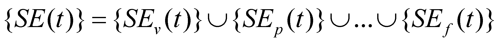
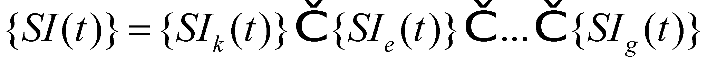

|
|
|
The above mentioned distributions are cellular spatial distributions, whose elements are cells specialized in the receiving of specific fluxes. Each of these set of cells which are spatially distributed generates at the present moment t a spatial distribution of elementary sensations, which are nothing else but spatial distributions of elementary fluxes of the internal ISS of animal IPS. This kind of spatial distribution of ISS elementary fluxes which exists at the moment t and is produced by a specific distribution of sensory cells is named sensorial distribution. It is clear that each type of sensory cell distribution (each sensory organ) shall produce a specific type of sensorial distribution which is specific in terms of syntax (the containers structure) to each sense organ, and in terms of distribution, it is specific to the received (internal or external) state.
In
the previous section, we have seen how many types of sensory cell
distributions has an evolved organism. If we shall associate to each
cellular distribution of a specific quality type a sensorial
distribution provided by it at the output
occured at the present moment t,
we shall get the set of the sensorial distributions with a
simultaneous existence at that moment, which are incident on the
brain at the spatial position assigned to each cellular distribution
(to the sensory organ). Thus, there are eight distributions which
represent the external state of the environment {SEv(t)},
{SEp(t)},
{SEa(t)},
{SEt(t)},
{SEn(t)},
{SEg(t)},
{SEo(t)},
{SEf(t)}
and the six (at least) internal sensorial distributions {SIk(t)},
{SIe(t)},
{SIn(t)},
{SIp(t)},
{SIv(t)},
{SIg(t)}.
Most of these distributions are divided in sub-distributions such as
left/right, up/down, and they have a great number of elements
(millions), all of them existing at the same moment, for example t1.
After the interval
 which is required for the sampling of other
external or internal state, another global set of the sensorial
distributions existing at the moment t2=t1+
which is required for the sampling of other
external or internal state, another global set of the sensorial
distributions existing at the moment t2=t1+ shall
be found at the brain’s entrance. In case of an individual OGk
organism, defined within its own species (with the necessary specific
attributes) and with a defined spatial position, which owns a NIPS
with the above-mentioned sensorial distributions, a global set shall
exist at the moment t inside
NIPS (more exactly into its STM):
shall
be found at the brain’s entrance. In case of an individual OGk
organism, defined within its own species (with the necessary specific
attributes) and with a defined spatial position, which owns a NIPS
with the above-mentioned sensorial distributions, a global set shall
exist at the moment t inside
NIPS (more exactly into its STM):
 (X.18.4.1)
which represents an abstract object named the present external individual state at the moment t of the environment, for the organism OGk. It is clear that another global set shall be related to the same organism OGk:
 (X.18.4.2)
which represents another abstract object for the same organism OGk, called the present internal individual state at the moment t.
Copyright © 2006-2011 Aurel Rusu. All rights reserved.